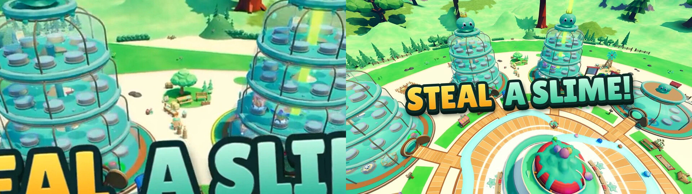
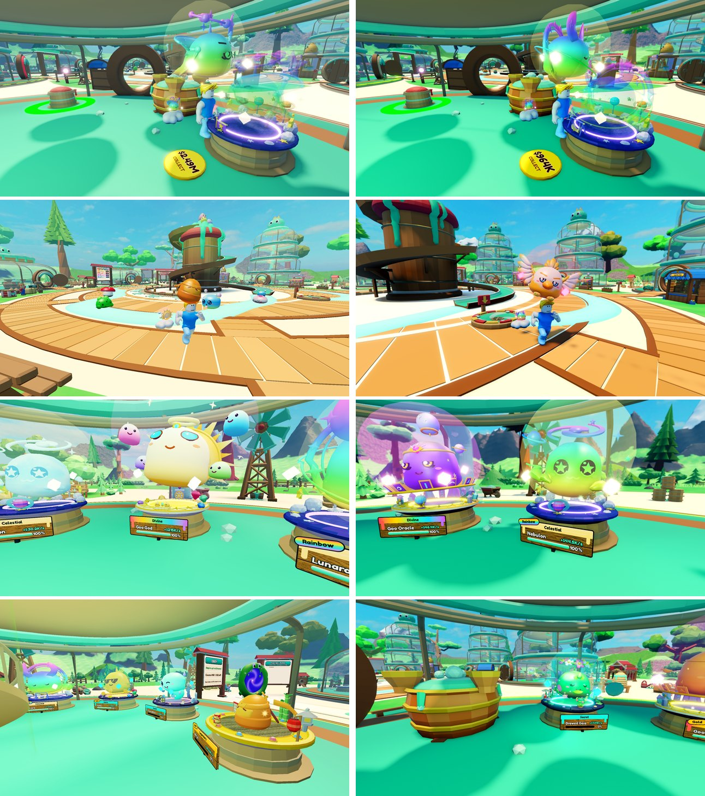
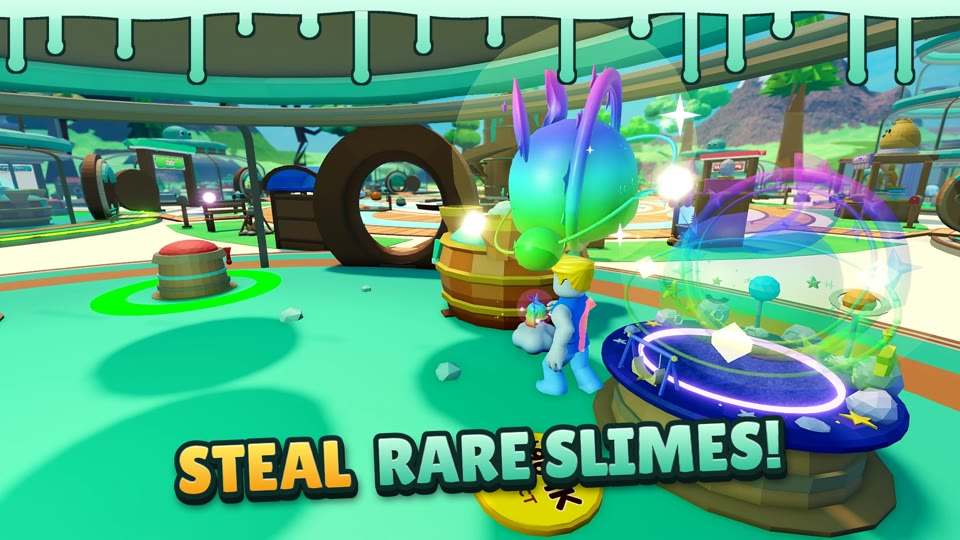

Store-page video: draft 10
Steal a Slime gameplay video for Creator Hub → Game details. 17.9 s, 1920×1080, 30 fps, no audio. Not uploaded: it needs your pick and OK first.
Pick one
- A: captions in the thumbnail style (two-tone gradient, thick outline, pop-in), for viewers who watch muted, and a "STEAL A SLIME!" title on the last shot.
- B: A plus the thumbnails' slime-drip border on top and a few twinkling sparkles. The sparkles stay at fixed spots, so on moving shots they don't follow the slime.
- C: the same footage, clean.
- Or ask for changes: a shot to drop, swap or add (see "Not in this cut" below), other caption words, a different avatar as the thief.
Storyboard
| Time | Planned beat | In this cut | Caption |
|---|---|---|---|
| 0.0–2.9 s | Catch a wild slime | yes Grab a wild slime in the middle of a busy lane | CATCH / WILD SLIMES! |
| 2.9–6.5 s | Steal from someone else's base | yes Real steal of a neighbour's Rainbow Celestial, run out with it overhead | STEAL / RARE SLIMES! |
| 6.5–10.1 s | Your base earns cash | yes Orbit past Divine, Celestial and Secret slimes with shines and their +$/s labels | BUILD / YOUR BASE! |
| 10.1–13.7 s | Merge 3 = rarer | yes Three Mythics finish brewing, a brewed Secret pops onto the pad beside the vat | MERGE 3 / = RARER! |
| – | Slap the thief (PvP) | not shot Needs a second real player; a hidden Studio can't add one, and I did not want a faked puppet | – |
| 13.7–16.3 s | Obby | yes Hopping up the jelly steps of the sky course over the goo pit | BEAT / THE OBBY! |
| 16.3–20.7 s | End shot | yes Pulls back from two jar bases up to the whole map with all eight bases | STEAL / A SLIME! |
What changed in draft 10
A 2.6 s obby shot before the end zoom: the player hops up the jelly steps of the Goo Gauntlet sky course over the goo pit, caption "BEAT THE OBBY!". The video is now 20.7 s. The obby thumbnail picks are on their own page: obby-thumbnail/review.html.
What changed in draft 9
- Trees no longer go flat at the end: tree shadows switched off near the top of the zoom because the video camera's focus point was never set (video only, not a game bug). Fixed.
- No sand row at the edges: from far away the green border band is drawn with fewer sides and the sand under it showed through. Fixed in the game: the hidden ground under the band is now green.
What changed in draft 8
- Smooth turns: the player now eases round over about half a second instead of snapping, slows down into a stop and speeds up out of it (catch and steal shots).
- Busy path: a wave of about 20 wild slimes fills the lane before the catch.
- Catch mid-path: the caught slime is in the middle of the lane, not at its end.
What changed in draft 7
Near the edges the green grass band turned into sand as the camera rose. That band is a flat part lying a hair above sand-coloured terrain, and from far away the sand showed through. Fixed in the game (branch fix/terrain-overhead: the hidden terrain under the floor now sits 2 studs lower) and the end shot re-shot. Left: your screenshot. Right: the same moment now.

What changed in draft 6
The broken-looking ground is fixed in the game itself (option C on branch fix/terrain-overhead): the grass texture no longer repeats in wavy bands, the low hills have no bare rock patches, and the dark grass patches blend in. The end shot pulls back from two jar bases up over the whole map, with the normal video look and no blur workaround, and the title stays up to the last frame. Left: your draft-3 screenshot. Right: the new last frame.
What changed in draft 4
New order, following the game's story: catch wild slimes, steal from another base, build your base, merge, end title.
(Draft 4's low end shot, since replaced by the pull-back above.) The end shot's ground looked broken. Flying high above the map shows big areas of the border terrain, where the grass and rock materials turn into blotchy, wavy patches; draft 3's colour grade made that much stronger. The end shot now stays low over two jar bases with a soft background, like the thumbnails, and still ends on "STEAL A SLIME!". The other shots don't show large terrain areas.
What changed in draft 3
The world looked glitchy in draft 2. Causes found in the frames and fixed:
- Sparkles and auras flickered. Particle effects ran in real time while the game was stepped frame by frame, so they jumped between frames. They now step with the video.
- The rare-slime shot strobed. The camera swung 110° in 3.6 s right next to the slimes. Now a slow 40° orbit.
- The merge shot whipped through the floor. Now a slow push-in with the vat and the result side by side.
- Flat, hazy look. Capture-only: top graphics quality, full mesh detail, richer colour and contrast, less haze, softer bloom, a soft background blur on close shots, light sharpening, a higher-quality encode.
Left draft 2, right draft 3, same moments:

Caption style next to a thumbnail


Key frames

Good to know
- All footage is this game in Roblox Studio, on the in-memory test store. Gameplay ran through the real server code; the scene (rare slimes, three stand-in neighbours) was set up with the admin test cheats.
- The thief is your own avatar (the Studio test player). Name and VIP tag are hidden.
- I checked motion frame by frame and with a jump check, but no person has watched it as a moving video yet, and it has not been seen on a phone or in the Creator Hub player.
- No sound by design (muted autoplay, no copyrighted music).